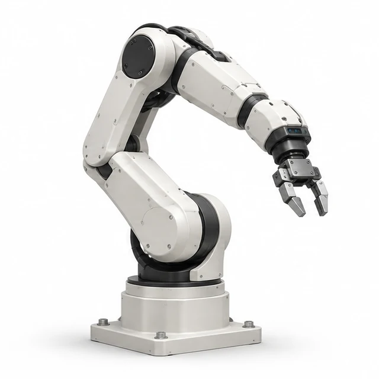
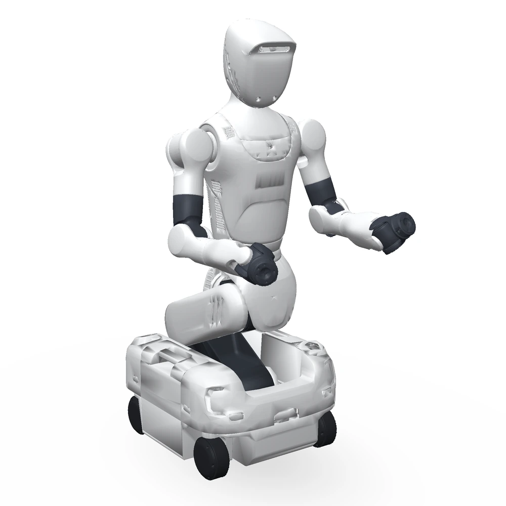
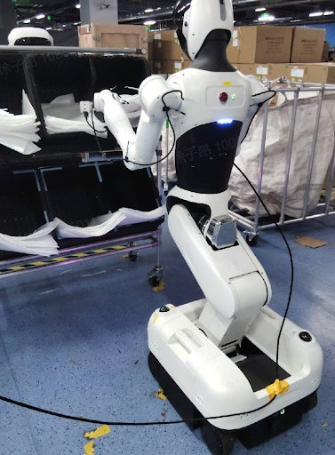

第一代本体 · 固定工位

固定位置机械臂
绑定单一工位，换线需重调工装与示教轨迹

绑定单一工位，换线需重调工装与示教轨迹

跨工位自主往返，一台覆盖多岗位上下料与分拣

零产线改造，直接进入按人设计的复杂工位


识别余料格口，定位外露泡沫纸边
闭爪抽出，结合夹爪读数确认全部带出
轮式底盘移动到料袋旁，松爪落袋
回到料架复检，循环直至九格全空
| 本体形态 | 轮式移动底盘 + 升降躯干 + 双机械臂 |
|---|---|
| 操作自由度 | 双臂各 7 自由度，覆盖九宫格高低层位 |
| 移动方式 | AGV 轮式底盘，料架与放置区间自主往返 |
| 末端与感知 | 左右平行夹爪（CAN 接触反馈）+ 多路深度相机 |
| 软件框架 | 自研 F1 Harness（程序优先 + 大模型兜底） |
| 安全控制 | F1 Owner 唯一动作出口 + Ruckig 轨迹平滑 |